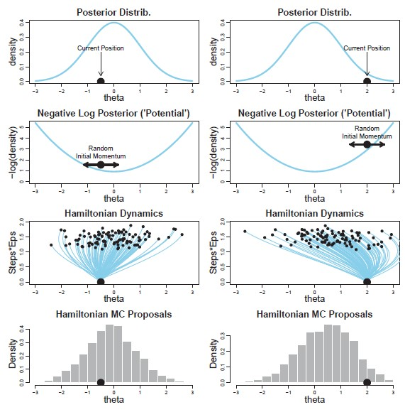
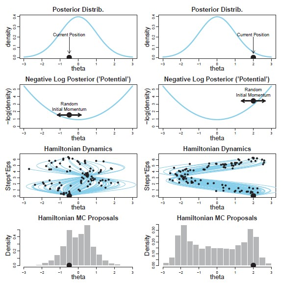
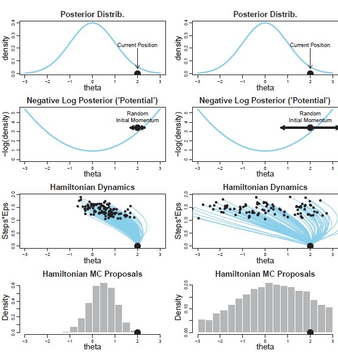

18 Markov Chain Monte Carlo (MCMC)
The previous chapter laid the foundation for Bayesian computations: given a random sample from the posterior distribution, we can approximate any Bayesian estimator, and the level of approximation is only limited by the size of the sample we can take. When the posterior distribution has the form of a known distribution, there are often built-in functions for obtaining a (pseudo) random sample. The majority of applications, however, involve posterior distributions which cannot be derived analytically. In such cases, Markov Chain Monte Carlo (MCMC) techniques are used to sample from the posterior distribution. Once we have a sample from the posterior distribution, we apply the MC Integration techniques from the previous chapter for computing estimates. In this chapter, we give a brief overview of MCMC techniques.
The technical details of MCMC can be overwhelming; we begin by discussing the conceptual goal of the algorithm, and we do that through Example 18.1.
Example 18.1 (Relative Wealth (MCMC Concepts)) Suppose you are attending a large gathering of your relatives. Given your current status as a student (without no income), you would like to network with these relatives in hopes that they will write you into their will, ensuring you a sizable inheritance. Naturally, you would like to be strategic about how much time you spend with each person, dividing your time with each person proportionally according to their wealth (spend more time with wealthier individuals). However, you face a couple of problems.
- Problem 1: you are uncertain about how many people are actually attending the party.
- Problem 2: you have no way of determining the wealth of each person.
However, while no one is willing to share their actual wealth, each person is willing to share a bit of information with you. If you show interest in speaking with them, the individual will let you know their wealth relative to that of the person you are currently speaking with (“I am half as rich as the person you are speaking with,” for example).
We want an algorithm for determining who to speak with, and for how long to speak with them.
While Example 18.1 is a toy problem, it illustrates the obstacles we are trying to overcome with MCMC methods. We want to take a sample from the posterior distribution, but we do not have the form of the posterior distribution. Instead, we only know the kernel:
\[\pi(\theta \mid \mathbf{y}) \propto f(\mathbf{y} \mid \theta) \pi(\theta).\]
The first “problem” in Example 18.1 reflects our uncertainty about where we should focus our attention within the posterior. We have a sense of the support of the posterior, but there may be large areas of the posterior which have essentially probability 0 of occurring. The second “problem” is that we do not have the value of the posterior; instead, we are only able to compute the posterior up to some scalar constant. Therefore, while we are not able to compute the value of the posterior, we can accurately determine the ratio of the posterior between two points. Observe that
\[\pi(\theta \mid \mathbf{y}) = \frac{f(\mathbf{y} \mid \theta) \pi(\theta)}{m(\mathbf{y})},\]
where \(m(\mathbf{y})\) represents the prior predictive distribution (see Definition 14.1). Now, we have that the ratio of the posterior evaluated at \(\theta = a\), relative to the posterior evaluated at \(\theta = b\) is given by
\[ \begin{aligned} \frac{\pi(\theta = a \mid \mathbf{y})}{\pi(\theta = b \mid \mathbf{y})} &= \frac{(1/m(\mathbf{y})) f(\mathbf{y} \mid \theta = a) \pi(\theta = a)}{(1/m(\mathbf{y})) f(\mathbf{y} \mid \theta = b)\pi(\theta b)} \\ &= \frac{f(\mathbf{y} \mid \theta = a) \pi(\theta = a)}{f(\mathbf{y} \mid \theta = b)\pi(\theta = b)}. \end{aligned} \]
That is, the ratio of the posterior evaluated at two points can be determined using only the kernel of the distribution. We now consider an algorithm for talking to your relatives that addresses Example 18.1.
Solution. Consider the following scheme. You randomly choose a person to begin speaking with (your “partner”). After a fixed period of time, you will flip a coin. If the coin is “heads up,” you will consider speaking with the person to your partner’s right; if the coin is “tails up,” you will consider speaking with the person to your partner’s left. This determines your “candidate.”
You ask the candidate about their wealth relative to your current partner. If your candidate is wealthier than your partner, you will definitely move to them and make them your new partner. If your candidate is less wealthy than your partner, however, you will only move to them with a probability equivalent to the candidate’s wealth relative to your current partner’s. That is, if the candidate is half as wealthy as your current partner, you will move to the candidate with probability 0.5.
You then repeat this process many times.
This process summarizes the idea behind MCMC methods. We generate a candidate value of the parameter; if the value of the posterior at the candidate value is higher than our current position, then we choose to move to the candidate point. Otherwise, we move to the candidate point with a probability equal to the ratio of the posterior for the candidate relative to our current position. We move through the parameter space in this fashion until we have generated a large sample from the posterior (say 3000 replicates).
The above thought exercise illustrates one of the simplest algorithms for generating from an unknown density, known as the Metropolis Algorithm. While in practice this algorithm is rarely implemented directly, it forms the basis of several more complex algorithms, and it illustrates the basic properties of all MCMC methods.
Definition 18.1 (Metropolis Algorithm) Suppose we want to generate random variates from the density \(\pi(\theta \mid \mathbf{y})\). We perform the following steps:
- Generate an initial value \(\theta^{(0)}\).
- At the \(k\)-th step, generate \(\theta^*\) (a candidate) according to a symmetric proposal density \(q\left(\theta \mid \theta^{(k-1)}\right)\).
- Compute \(A\left(\theta^*, \theta^{(k-1)}\right)\) where \[A\left(\theta^*, \theta^{(k-1)}\right) = \frac{\pi\left(\theta^* \mid \mathbf{y}\right)}{\pi\left(\theta^{(k-1)} \mid \mathbf{y}\right)} = \frac{f\left(\mathbf{y} \mid \theta^*\right) \pi\left(\theta^*\right)}{f\left(\mathbf{y} \mid \theta^{(k-1)}\right) \pi\left(\theta^{(k-1)}\right)}.\]
- Generate \(U \sim Unif(0,1)\). If \(U \leq A\left(\theta^*, \theta^{(k-1)}\right)\), then set \(\theta^{(k)} = \theta^*\); else, set \(\theta^{(k)} = \theta^{(k-1)}\).
- Repeat Steps 2-4 \(m\) times, for some large \(m\).
When generating an initial value, \(\theta^{(0)}\), we could choose \(\theta^{(0)} \sim \pi(\theta)\) if the prior is easy to generate from. While it is common to choose \(q(\cdot)\) to be a Normal distribution with mean \(\theta^{(k-1)}\), it is not a requirement to do so; when a Normal distribution is used, it can be difficult to determine a reasonable variance (too large, and you drift too far away; too small, and you do not move at all).
The Metropolis Algorithm is typically run several thousand times, resulting in what is known as a Markov Chain.
Definition 18.2 (Markov Chain) A sequence of random vectors \(\theta^{(0)}, \theta^{(1)}, \theta^{(2)}, \dotsc, \theta^{(n)}\) is a Markov Chain with stationary transition probabilities if for any set \(A\) and any \(k \leq n\)
\[ \begin{aligned} Pr\left(\theta^{(k)} \in A \mid \theta^{(1)}, \theta^{(2)}, \dotsc, \theta^{(k-1)}\right) &= Pr\left(\theta^{(k)} \in A \mid \theta^{(k-1)}\right) \\ &= \int_{A} q\left(\theta^{(k)} \mid \theta^{(k-1)}\right) d\theta^{(k)} \end{aligned} \]
where \(q\) is called the transition kernel.
In general, Markov chains are not required to have stationary transition probabilities, but it is a nice simplifying assumption that is applied in Bayesian computing methods. Markov chains are a topic of interest in and of themselves in probability theory and are beyond the scope of this text. We primarily focus on the fact that the probability that a value is in some region depends only on the previous state; the remaining “history” (previous states in the chain) is unimportant.
The Markov Chain is essentially a sample; of course, for it to be useful, we need to establish that the chain is also representative of the appropriate target distribution. That is, we need to know the Markov Chain represents the posterior distribution. This target distribution has a name in Markov Chain literature — the “stationary distribution.”
Definition 18.3 (Stationary Distribution) Let \(\theta^{(0)}, \theta^{(1)}, \theta^{(2)}, \dotsc, \theta^{(n)}\) be a Markov Chain. The stationary distribution of the Markov Chain is the distribution \(p(\theta)\) such that
\[Pr\left(\theta^{(k)} \in A\right) = \int_{A} p(\theta) d\theta.\]
The stationary distribution is where the Markov Chain settles down so that the probability that any variate is in some region is computed using that same distribution \(p\) (as opposed to the transition kernel). You can think of it as the limit of the transition kernel as \(k\) gets large.
The idea is to choose a proposal density \(q\) in the Metropolis Algorithm such that the stationary distribution of the resulting Markov Chain, if one exists, will be the posterior distribution of interest. So, we want to pick a proposal density \(q\) that is easy to generate from, is symmetric, and so that eventually, the values we are generating behave as if they were drawn from the posterior distribution. The machinery needed to prove such results is beyond the scope of our text, but it can be shown that the Metropolis Algorithm produces a Markov Chain for which the stationary distribution is the same as the posterior distribution, provided that the proposal density is symmetric. That is, as \(k\) increases, the values generated by this algorithm behave as if they were drawn from the posterior distribution. More, we can show that this is true regardless of the choice of the starting value \(\theta^{(0)}\).
It can be shown that the the Metropolis Algorithm has the posterior distribution as the stationary distribution of the Markov Chain, but the Metropolis Algorithm is not always the most efficient algorithm for generating from the posterior distribution. In practice, other algorithms, such as the Gibbs sampler or Hamiltonian Monte Carlo, improve on the efficiency by implementing modifications to the above Metropolis Algorithm.
We now have a way of generating values which have properties similar to random variates drawn from the posterior distribution. The language here is chosen with care because, as always, there is a catch: the values generated in the Markov Chain are identically distributed, but are not independent.
In practice, analysts often state that they have obtained a random sample from the posterior using MCMC methods; and, we can often proceed as if that were true. However, when we use MCMC methods, the resulting sample is not truly a “random sample” in the sense of being IID. The points are identically distributed, but since each variate in the sample was generated based on the value of the previous variate, there is a dependence between the variates. Fortunately, this dependence between values generated consecutively (known as autocorrelation) is often negligible in practice.
The real issue is that the theory introduced in Chapter 17 relied on having a random sample (IID variates). Therefore, the fact that the Markov Chain generated by the Metropolis Algorithm does not result in independent observations seems to imply that we are unable to rely on MC Integration. Fortunately, however, there is a Law of Large Numbers-type result for Markov Chains which says
\[\lim\limits_{m \rightarrow \infty} \frac{1}{m} \sum_{k=1}^{m} g\left(\theta^{(k)}\right) = \int g(\theta) p(\theta) d\theta\]
where \(g(\cdot)\) is some real-valued function and \(p(\theta)\) is the stationary distribution of the Markov Chain, if it exists. This result says that even though the points are related, as we take a large number of them, we can approximate integrals (therefore, Bayesian estimators) using sample averages. That is, we can apply MC Integration techniques to Markov Chains.
For a sufficiently large number of replications, the Markov Chain resulting from an MCMC algorithm will behave as a random sample from the posterior distribution.
18.1 Hamiltonian Monte Carlo
The trick to MCMC methods is to choose a transition kernel that is efficient and can handle the myriad of situations encountered in practice. The Metropolis Algorithm, while simplistic, is not very efficient, and can be quite difficult to implement when the dimension of the parameter vector increases. A commonly implemented alternative is known as the Gibbs sampler. This is implemented in the popular Bayesian software packages BUGS (Bayesian inference Using Gibbs Sampling) and JAGS (Just Another Gibbs Sampler). BUGS is a standalone software package while JAGS is implemented in other computing languages (like R and Python). These software packages provide a myriad of algorithms based on the Gibbs sampler which address hierarchical models in a nice way. However, in some complex models, these algorithms can be inefficient or fail to produce variates from the posterior. Stan implements a Hamiltonian Monte Carlo (HMC) algorithm which can succeed in these situations. While the details of the algorithm are beyond the scope of this text, we discuss the ways in which HMC improves upon the Metropolis Algorithm discussed above.
The Metropolis Algorithm can be summarized in the following two statements:
- Choose the candidate point using a symmetric proposal distribution centered on the current point.
- Favor points with a larger corresponding posterior density, moving to candidate points with lower posterior density probabilistically.
The key distinction between the Metropolis Algorithm and HMC is to allow the proposal distribution to be dependent upon our current location.
HMC uses proposal distributions which favor moving toward the posterior mode.
The idea is illustrated in Figure 18.1, created by John Kruschke (Kruschke 2015), which shows how proposals are generated for two different initial values. Note, the end result in this graphic is not a sample from the posterior but the distribution of potential next steps.

To illustrate how this works, consider two different current positions within a posterior distribution. The Metropolis Algorithm would simply say to generate proposals which are symmetric about the current position. HMC generates proposals that are closer to the posterior mode (as evidenced by the bottom part of the figure where the majority of proposals are near the mode). In order to determine where to move from the current position, the HMC algorithm considers the potential of the position, defined through the negative log-density. The potential gives an idea of how far we might want to travel (the potential of the position to change).
Definition 18.4 (Potential) The potential of a value \(\theta\) is the negative logarithm of the posterior evaluated at \(\theta\). In practice, we need only know the potential up to a constant. That is, it suffices to define the potential as
\[\text{Potential}(\theta) = -\log\left[f(\mathbf{y} \mid \theta) \pi(\theta)\right].\]
While we have described the potential as a value, since it exists for all \(\theta\) in the support, we can think of the potential as a function (row 2 of Figure 18.1). Now, imagine the current position is a ball on the potential; the proposed position is determined by flicking the ball randomly. This random “flick” is done by selecting a random variable from a Standard Normal distribution, which determines both the magnitude and direction of the flick (negative values move the ball to the left, and positive values move the ball to the right). We then watch the ball roll around for a while. Wherever the ball stops is the proposed position. This is illustrated in the third row of graphics in Figure 18.1 that show how the ball moves over time to the proposed position.
The sum of potential and kinetic energy is known as the Hamiltonian (hence the name of this procedure). The total energy should be conserved at each point in the algorithm.
As the ball rolls around on the potential, it will naturally be drawn to lower points on this surface. That is, candidate points will tend to be drawn from regions with lower potential, corresponding to regions with a higher posterior density. Notice that when the current position is near the posterior mode, the potential positions are nearly symmetric about the current location as in the Metropolis Algorithm. But, if the current position is far from the posterior mode, the potential positions are drawn from regions closer to the posterior mode and the potential positions are far from the current position.
The HMC algorithm generates proposals which tend to have lower potential.
We emphasize that these are just candidate positions. Once a candidate position is identified, we must decide whether to move there or remain in the current position, just as we do in the Metropolis Algorithm.
Generate \(U \sim Unif(0,1)\) and \(A\left(\theta^*, \theta^{(k-1)}\right)\) where
\[A\left(\theta^*, \theta^{(k-1)}\right) = \frac{f\left(\mathbf{y} \mid \theta^*\right) \pi\left(\theta^*\right) \omega\left(\theta^*\right)}{f\left(\mathbf{y} \mid \theta^{(k-1)}\right) \pi\left(\theta^{(k-1)}\right) \omega\left(\theta^{(k-1)}\right)}\]
and \(\omega(\cdot)\) is the momentum. If \(U \leq A\left(\theta^*, \theta^{(k-1)}\right)\), then we move to the new position; otherwise, we remain in the same position.
The momentum can be thought of as how much speed the ball has when you reach the candidate position (remember, we stop the ball not when it comes to rest but after some fixed amount of time). Recall that we apply a random momentum to the current location of the ball. The aspect we want to emphasize here is that the decision rule is quite similar to the Metropolis Algorithm.
We have described this process as letting the “ball roll around” for some fixed set of time. In practice, we emulate this by taking some predefined number of steps of a certain size based on the gradient (much like numeric function minimization). Both the step size and number of steps require some tuning. The step size is tuned to balance how far away from the current position we move and the degree of approximation. If we take small steps, we approximate the curve quite nicely, but we do not get anywhere. If we take large steps, we move away from our current position, but the approximation suffers. The total duration (the number of steps taken) is tuned to ensure we do not overshoot or make a u-turn. If we let the ball roll for too long, it could overshoot the posterior mode by a large degree; or, we may end up stopping the ball when it has rolled back to where it started. Figure 18.2, created by John Kruschke (Kruschke 2015), illustrates the impact of allowing the “time” (number of steps and length of step size) to be too large; notice the difference in the distribution of candidate points in Figure 18.2 compared to Figure 18.1.

In addition to these tuning parameters, we must determine the standard deviation of the symmetric distribution used to apply the momentum to the current position. This choice needs to balance variety with accuracy. Too small of a standard deviation (like nudging the ball) means it will not roll far from where it started, and every candidate is essentially the same (leading to a higher likelihood of acceptance/rejection). Too large of a standard deviation, and a high degree of candidates will be rejected. Figure 18.3, created by John Kruschke (Kruschke 2015), illustrates the impact of standard deviation in the proposal distribution; notice the difference in the distribution of candidate points between the two columns in Figure 18.3.

Proper tuning ensures that the algorithm is efficient and a majority of the variates are useful in representing the posterior. These are handled internally by the software, but it is important to have an understanding of what is happening in the background.
With MCMC methods, we can address a multitude of more complex problems. We do note the one limitation of Stan is that it does not currently support discrete parameters directly. This is because the HMC algorithm needs a smooth function in order to compute the gradient. Not supporting discrete parameters is not as limiting as it might seem, but it does prohibit automatic model comparison within Stan and eliminates the ability to put a point mass in the prior distribution.
While you could write custom implementations of the HMC (or any MCMC) algorithm, software like Stan does the hard work for you. However, in order to make use of those tools, you must specify the Bayesian model (the likelihood and the prior) in addition to providing the data. This can require your learning a new “probability language” (as opposed to a computing language) for specifying such models. Some software packages have pre-built functions/interfaces for commonly specified models allowing you to get started more quickly.